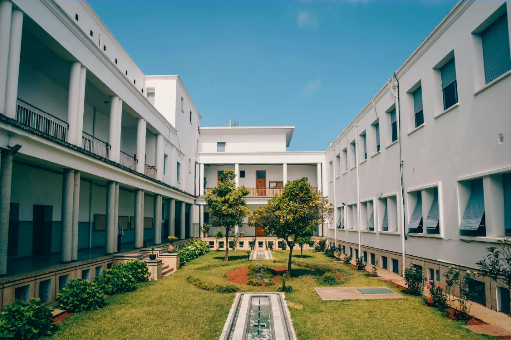
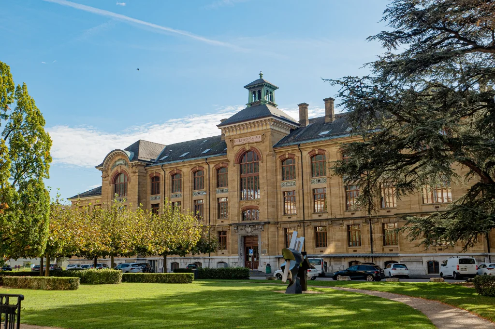
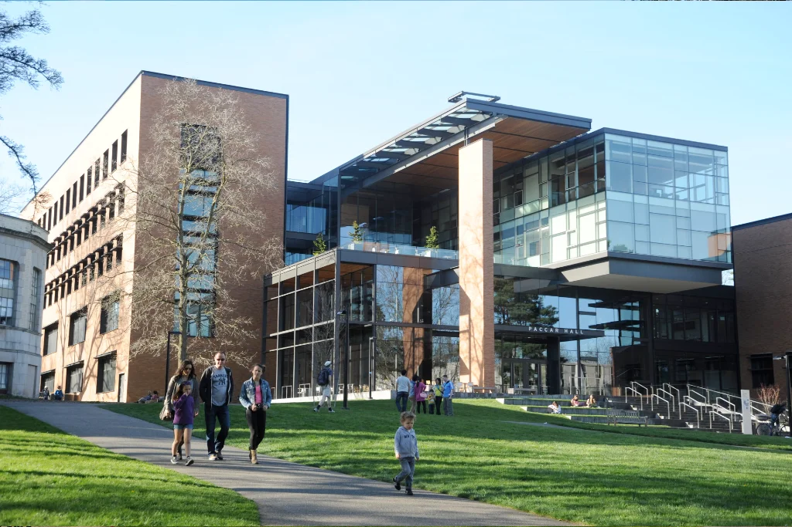

Campus & Facilities
A safe, green, and well-equipped learning and boarding environment on Kiwatule Road, Ntinda.
Experience Our Ntinda Campus
Child-friendly facilities designed to inspire focused learning, safety, and healthy growth
Located along Kiwatule Road in Ntinda, Kampala, St. Francis Day and Boarding Primary School features spacious classrooms, a well-stocked school library, an ICT laboratory, separate boys' and girls' boarding dormitories, a modern dining hall, and sports grounds.

Conducive Classrooms & Library
Our bright, well-ventilated classrooms are organized by section (Nursery, Lower Primary, and Upper Primary) with age-appropriate furniture, visual learning charts, and dedicated reading corners.
- Spacious classrooms for P.1 to P.7 and Nursery
- Stocked library with NCDC textbooks and storybooks
- Computer laboratory for practical digital literacy
- Practical science demonstration equipment
ICT & Computer Lab
Equipped with desktop computers where pupils learn typing, educational software, and foundational ICT skills.
Practical ICTReading & Revision Hall
Quiet study and supervised prep spaces for Upper Primary and PLE candidates.
Daily Prep
Sports Grounds & Nursery Play Park
Physical education is a vital part of producing an all-round learner. Our campus provides safe play areas for Kindergarten pupils alongside sports fields for primary learners.
- Football and netball pitches
- Dedicated Nursery swings, slides, and play park
- Track and field space for Inter-House Athletics
- Indoor games (chess, scrabble, table tennis)
Team Sports Courts
Coached afternoon training sessions in football, netball, volleyball, and athletics.
All HousesEarly Childhood Play Area
Soft, supervised outdoor play equipment tailored for Daycare and Nursery children.
Child-SafeSafe, Home-Away-From-Home Boarding
Our boarding section offers separate, strictly supervised dormitories for boys and girls with resident matrons and wardens who guide pupils in personal hygiene, bedtime routines, and morning preparation.
- Separate, secure dormitories for boys and girls
- Resident matrons and patrons on duty 24/7
- Mosquito-netted beds and clean washrooms
- Supervised evening and weekend prep sessions
Dedicated Matron Care
Warm parental care helping younger boarders with laundry, bathing, and neatness.
Full-Time Matrons24/7 Campus Security
Walled perimeter, controlled gate access, and round-the-clock security personnel.
24/7 GuardedNutritious Dining, Sickbay & School Transport
We prioritize learner health and nutrition with freshly prepared, balanced meals served daily, a fully stocked school sickbay with a qualified nurse, and reliable school vans serving surrounding Kampala neighborhoods.
- Hygienic kitchen and spacious dining hall
- On-site school sickbay and first-aid clinic
- Reliable school bus/van transport for day scholars
- Main hall for assemblies, MDD festivals, and prayers
School Sickbay
Staffed by our resident school nurse for immediate health checks and first aid.
Qualified NurseSchool Shuttle Vans
Safe morning pick-up and evening drop-off along designated Ntinda and Kampala routes.
Day Scholars

Our Location in Ntinda
Visit St. Francis Day and Boarding Primary School along Kiwatule Road, Ntinda, Kampala. Parents and guardians are welcome for guided campus tours Monday to Saturday.